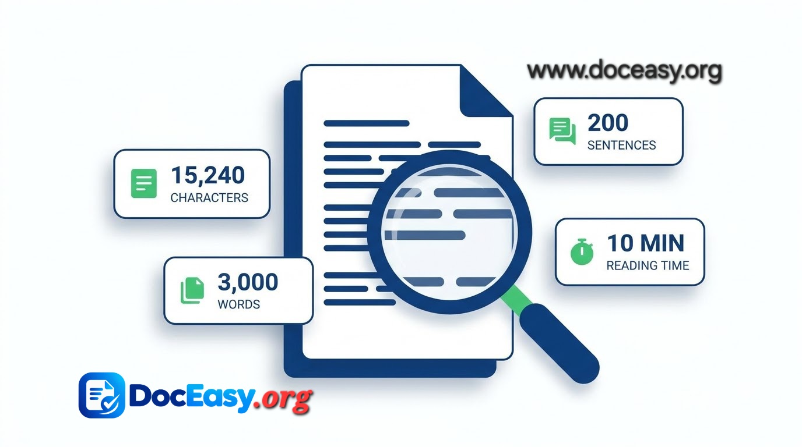

Word and character counter
Paste your text and see the counts update as you type. Nothing is uploaded — the analysis runs in this browser tab.
Most used words
Keyword density appears once you have written a few sentences.
| Word | Uses | Density |
|---|
How to use word and character counts to size your writing
Most writing has a length it needs to hit. A meta description gets cut off past roughly 160 characters, a conference talk runs to a word budget rather than a page count, and academic abstracts are usually capped to the word. Counting by hand is slow and counting in a word processor means opening one. This tool gives you the numbers as you type, and adds the context those numbers usually need: how long the text takes to read aloud, how hard it is to read, and which words you are leaning on.

📷 Add a screenshot at assets/images/word-counter-demo.jpgGetting started
- Paste or type. Drop text into the editor, or use Open a file to load a .txt or .md draft straight from your device.
- Read the four headline numbers. Words, characters, sentences and reading time sit above the editor and update instantly.
- Check the sidebar for detail. Characters without spaces, paragraph count, unique words, average sentence length and speaking time are all broken out.
- Watch your platform limits. The bars turn amber as you approach a limit and red once you pass it, so you can trim before you paste.
What changed in this version
- Readability scoring. A Flesch Reading Ease score with a plain-English verdict and an approximate US grade level.
- Keyword density. The ten most used words with their share of the total, filler words excluded.
- Live platform limits for X, meta titles, meta descriptions, Instagram captions, LinkedIn posts and SMS.
- Text tools. Four case conversions, a spacing cleanup, plus copy, download and file open.
- Draft recovery. Your text is saved to this device only. Clear removes it.
- A word goal with a progress bar, and theme sync with the main site.
Common questions
Q: How is reading time calculated?
Reading time assumes 200 words per minute. Speaking time uses 130 words per minute.
Q: Does the character count include spaces?
The headline figure counts everything, including spaces. The sidebar shows the count without spaces.
Q: Is my text stored or uploaded?
No text is sent anywhere. A copy of your draft is kept in this browser's local storage.
Q: What does the readability score mean?
It is the Flesch Reading Ease score, from 0 to 100, where higher is easier. Web writing usually aims for 60 or above.
Q: How is keyword density counted?
Each word's count is divided by the total number of words. Common filler words are excluded.